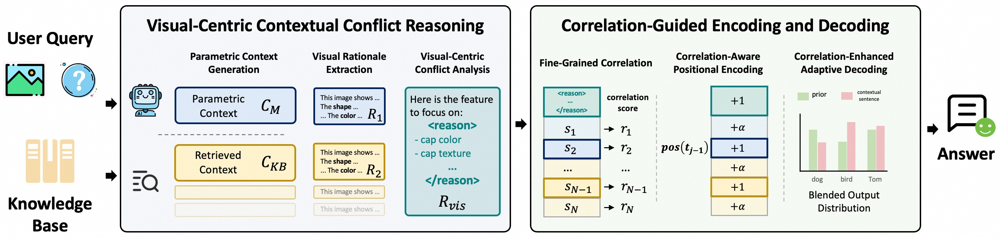
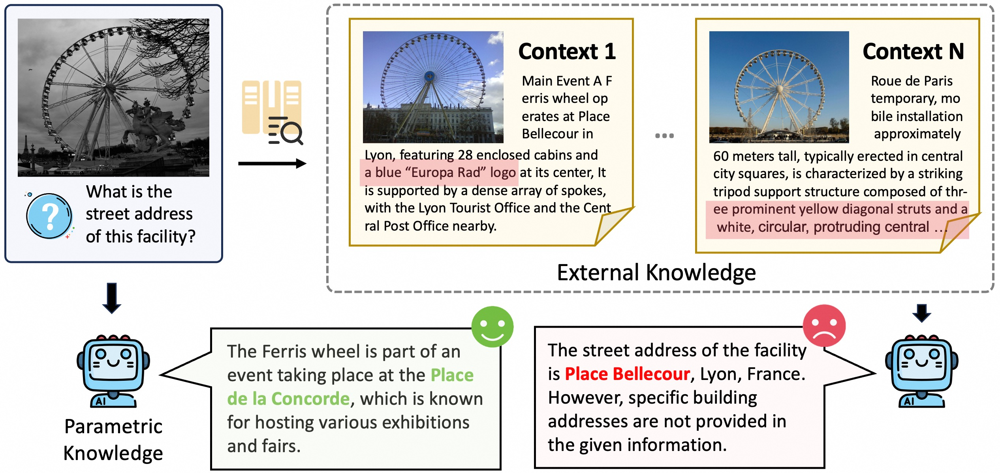
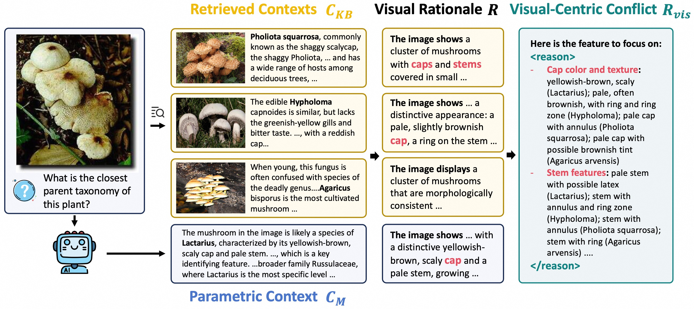
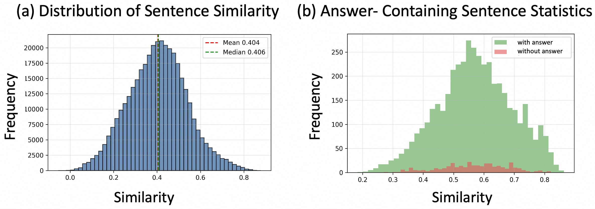
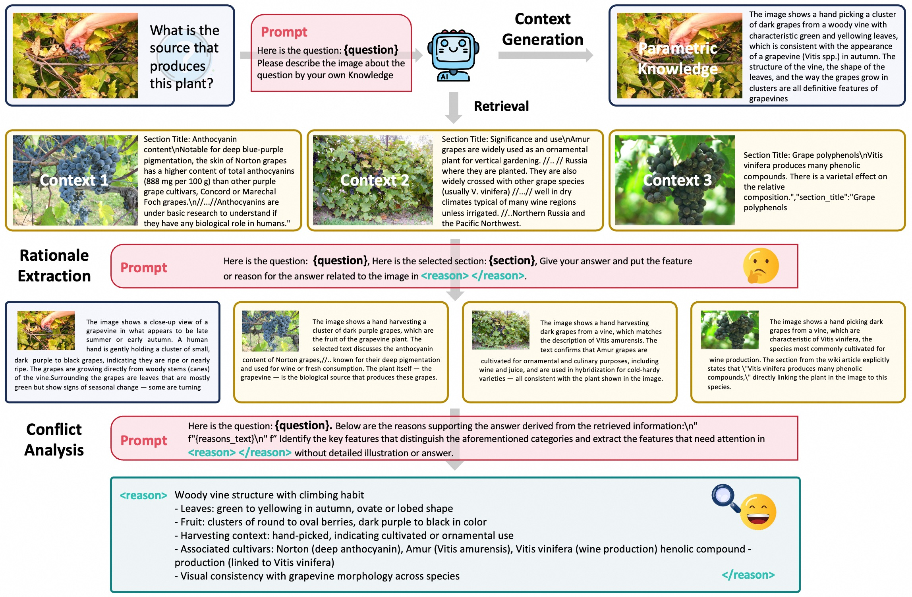

CVPR 2026Training-Free KB-VQA
CC-VQA: Conflict- and Correlation-Aware Method for Mitigating Knowledge Conflict in Knowledge-Based Visual Question Answering
See the evidence. Resolve the conflict. Answer with confidence.
1 University of Chinese Academy of Sciences
2 Institute of Automation, Chinese Academy of Sciences
3 Alibaba Cloud Computing
Framework Overview

Retrieval helps—until knowledge disagrees.
VLMs carry static parametric knowledge. RAG supplies dynamic external evidence. When they conflict, models may ignore useful retrieval—or trust misleading context.
Existing conflict mitigation methods are mainly inherited from language-only settings. They overlook the image as decisive evidence and process long retrieved contexts too coarsely.
Visual attributes can validate competing knowledge claims and expose the source of conflict.
Retrieved contexts average 107 sentences, while 90% of correct answers lie in the top 25% most correlated sentences.

Conflict-aware reasoning, correlation-aware generation.
Two complementary components guide the model from conflicting knowledge to a visually grounded answer.
01
VCCR
Visual-Centric Contextual Conflict Reasoning
Externalize the model’s parametric knowledge, extract visual rationales for every context, and summarize the visual features that distinguish conflicting claims.
- Parametric context generation
- Visual rationale extraction
- Visual-centric conflict analysis
02
CPE + CAD
Correlation-Guided Encoding and Decoding
Estimate sentence-level image-question relevance, compress positional space for low-correlation statements, and adapt token sampling using correlation-weighted conflict scores.
- Fine-grained correlation
- Correlation-aware positional encoding
- Correlation-enhanced adaptive decoding

Most context is not equally useful.

107sentences per retrieved context, on average
90%of correct answers occur within the top 25% most similar sentences
CC-VQA keeps all evidence available while changing how strongly each statement participates in generation.
State-of-the-art, without generator fine-tuning.
Surpasses both training-free methods and the RL-trained Wiki-PRF.
+4.7 points over the matched Qwen2.5-VL retrieval baseline.
+3.3 points over the matched retrieval baseline.
10K InfoSeek analysis
Retrieval becomes more helpful—and less harmful.
CC-VQA reconciles external evidence with parametric knowledge instead of blindly preferring either source.
Helpful ratio
16.82%18.63%
Harmful ratio
10.53%7.69%
Vanilla RAG41.4
+ VCCR43.3
+ CAD44.1
+ CPE45.0
Grounding conflict resolution in what the model sees.

Cite CC-VQA.
@inproceedings{hong2026ccvqa,
title = {CC-VQA: Conflict- and Correlation-Aware Method for Mitigating Knowledge Conflict in Knowledge-Based Visual Question Answering},
author = {Hong, Yuyang and Gu, Jiaqi and Lou, Yujin and Fan, Lubin and Yang, Qi and Wang, Ying and Ding, Kun and Wu, Yue and Xiang, Shiming and Ye, Jieping},
booktitle = {IEEE/CVF Conference on Computer Vision and Pattern Recognition},
year = {2026}
}